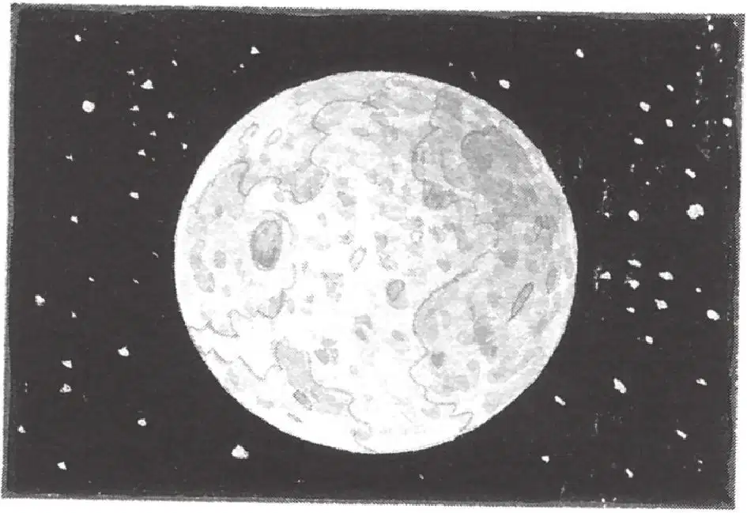

午夜的树林苏醒了。
微风吹得树叶沙沙响。
一只猫头鹰在叫。
周围的声音那么微弱，却又充满了生机。
杰克睁开眼睛，把眼镜往上推了推。
他笑了。仙女摩根还在他们身边，一头长长的白发闪闪发亮。
“仙女摩根，你和树屋会一直留在这里吗？”安妮问道，“会一直留在蛙溪吗？”
“不，我恐怕要再次出发了，”仙女摩根回答，“我离开卡米洛特已经很久了。”
仙女摩根把背包递给杰克，然后摸了摸他的脸颊。杰克感到她的手是那么柔软、清凉。
“你脸上还沾了一点儿月球上的尘土。”仙女摩根说，“谢谢你，杰克，谢谢你这么热爱知识。”
“不用谢。”杰克说。
仙女摩根拉了拉安妮其中一根辫子，说：“还要谢谢你，安妮，谢谢你相信所有不可能的事情。”
“不客气。”安妮说。
“现在回家吧。”仙女摩根说。
杰克笑了。家在地球上——这个明亮的、五颜六色的世界，一切都生机勃勃，不断变化。
“再见了，仙女摩根。”安妮说着开始往树屋外面走。
杰克扭头看着仙女摩根。
“你会很快回来吗？”他问道。
“一切都有可能。”仙女摩根说，“宇宙充满了奇迹。是不是，杰克？”
杰克微笑着点点头。
“快走吧。”仙女摩根轻声说。
杰克跟着安妮爬下绳梯，来到地面上。
起风了。
大树开始摇晃。
一声惊天动地的巨响冲击着杰克的耳膜。他紧紧地闭上眼睛，用手捂住耳朵。
接着，一切又归于沉寂。
杰克睁开眼睛，绳梯不见了。他透过大橡树的树叶和树枝望去，在树屋原来所在的地方，现在只有皎洁的月光。
“再见了，仙女摩根。”杰克惆怅地低声说道。
“再见了，花生米。”安妮说。
杰克和安妮望着大橡树的树梢，站了很久很久。
“可以回去了吗？”安妮问。
杰克点点头。
他们开始往家走。
午夜的空气清凉而湿润，周围充满了地球生活的各种小声音。
杰克和安妮离开了蛙溪树林，朝他们家所在的街道走去。
安妮抬头看着夜空说：“月亮看上去真远啊，是不是？”
“真远，”杰克想，“确实很远。”
“不知道那个月球人怎么能一个人待在上面。”安妮说。
“你想说什么？”杰克问道。
“我想知道的是，谁帮他穿宇航服呢？”安妮问，“他摔倒时，谁扶他站起来呢？”
“而且，他到底是谁呢？”杰克也觉得纳闷儿。
“你觉得他是谁呢？”安妮问。
“肯定是从地球去的一位科学家或宇航员。”杰克猜测。
“不，我认为他是个外星人，”安妮说，“来自另一个星系。”
杰克笑话她：“你怎么会这么想呢？”
“我有这种感觉。”安妮说。
“你错了，”杰克说，“没有证据能证明外星人的存在。”
“现在也许没有，”安妮说，“但是别忘了，我们可是穿越到了未来。”
“哦，好吧。”杰克说。
他们穿过自家的院子，走上后门的台阶。安妮踮着脚走进家门，杰克也跟了进去。
在关门之前，杰克抬头看了一眼月亮。
“安妮说得对吗？”他问自己，“那个月球人有可能来自另一个星系吗？”
他耳畔又响起了仙女摩根的话：“宇宙充满了奇迹。是不是，杰克？”
“晚安，月球人。”杰克轻声说了一句，然后关上了门。
